부산불교방송 BBS · 2015.03.10
부산경남 라디오830 · 한의학상담
요통과 허리디스크
정관고려한의원 · SINCE 2010
한의학박사·한방재활의학과 전문의가 직접 진료합니다.
예약 없이 편한 시간에 들러 주세요.
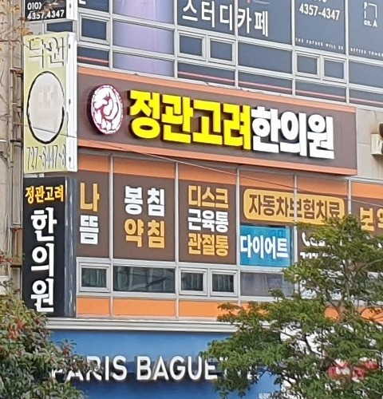
01. 어떤 증상으로 오셨나요?
한방재활의학과 전문의가 통증이 생긴 원인부터 살펴 진료합니다. 특히 교통사고 후유증을 전문적으로 봅니다.
사고 이후 남은 통증과 불편을 전문적으로 진료
안내 보기허리통증·다리 저림
목통증·팔 저림
어깨·팔꿈치·손목 통증
고관절·무릎·발목 통증
목과 등의 담을 사혈부항과 침, 약침 등을 이용해 치료
체질과 상태에 따른 보약을 원장이 직접 조제
방송 출연분 보기추나, 침·전침, 뜸, 부항, 약침, 봉침, 물리치료, 한약
자세히 보기02. 한의원 소개
2010년 정관 최초로 개원해 오랜 시간 정관 주민의 건강을 지켜 왔습니다. 오래된 이웃처럼 편하게 들르실 수 있는 한의원을 지향합니다.
원장 소개 보기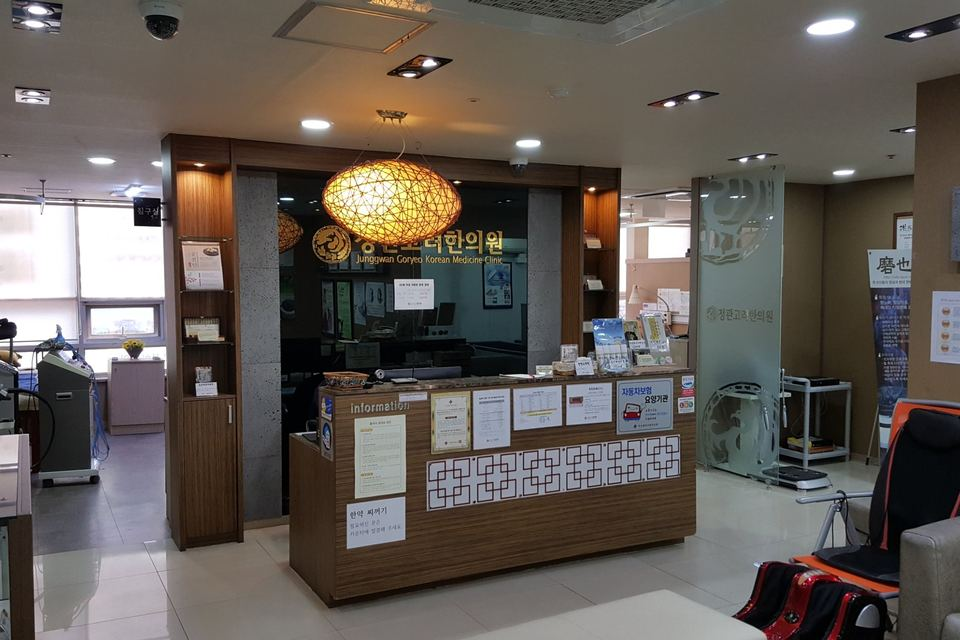
전화 예약 없이 편한 시간에 들러 진료받으세요.
침이 무서운 분도 걱정 마세요. 미리 말씀하시면 더 안 아프게 시술합니다.
정관 최초의 한의원으로 오랜 시간 정관 주민과 함께해 왔습니다.
오래된 이웃 같은 한의원을 표방하므로, 치료 비용이 부담스럽지 않게 신경 씁니다.
사진을 좌우로 밀어서 직접 돌려 보세요
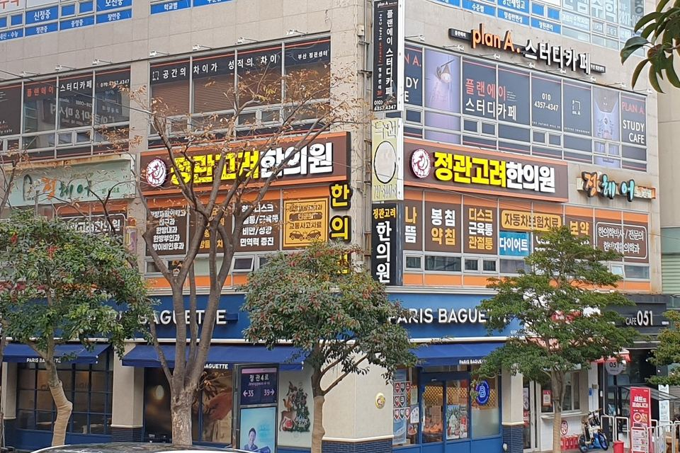
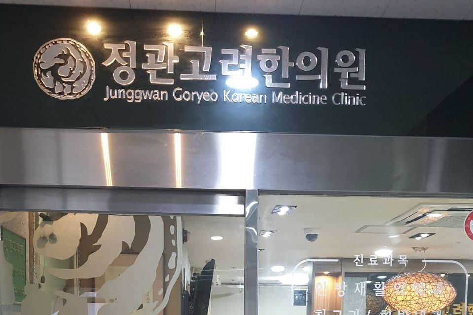
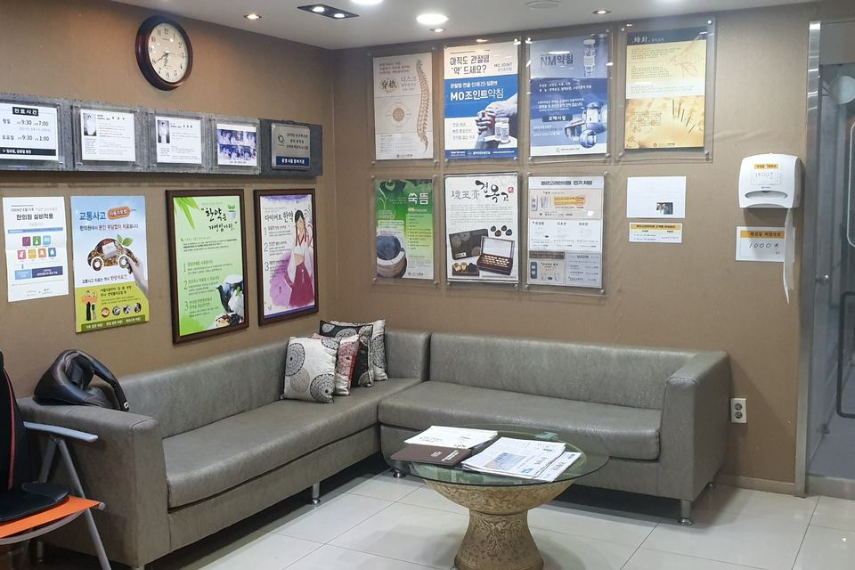
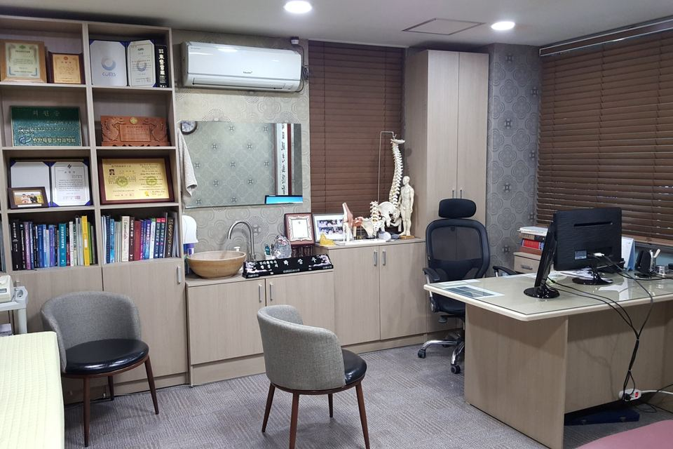
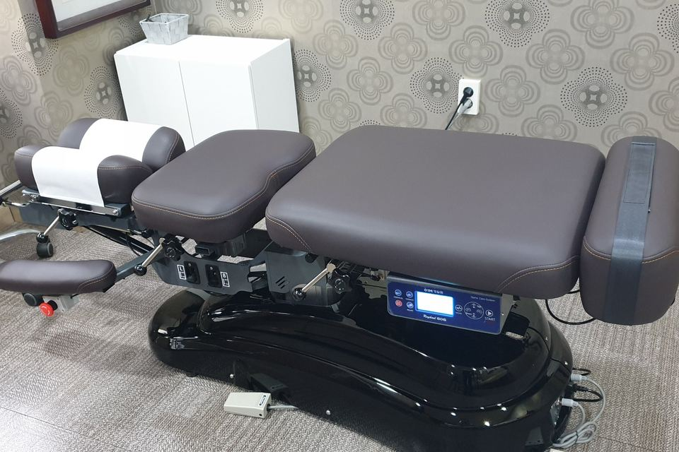
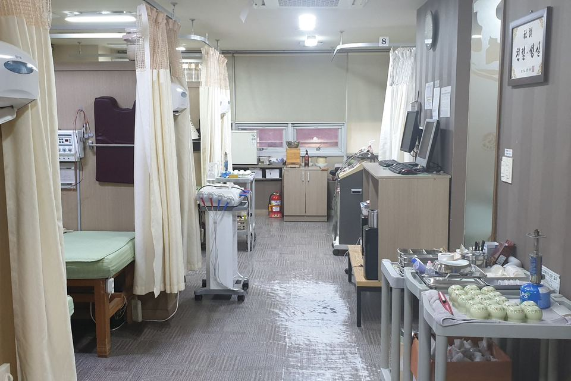
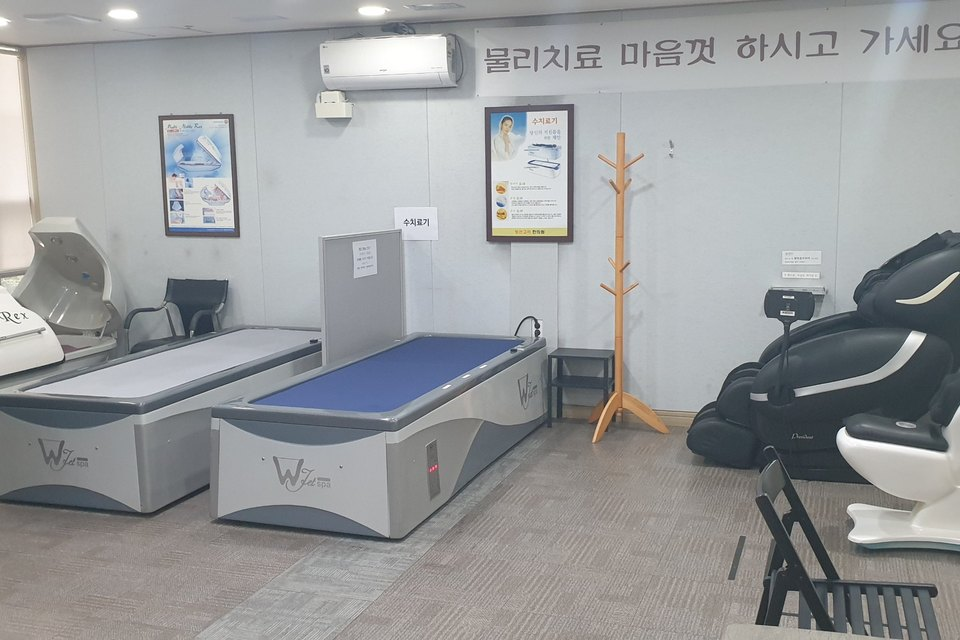
03. 원장 소개
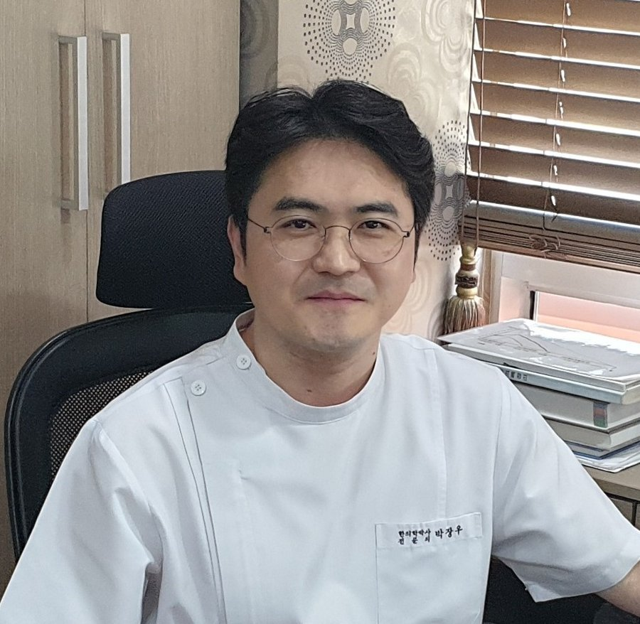
04. 치료 방법
한 가지 치료만 고집하지 않고, 통증의 원인과 회복 단계에 맞춰 필요한 치료를 골라 함께 씁니다.
손으로 틀어진 척추와 관절을 바로잡아 통증을 줄이는 치료입니다.
통증 부위와 경혈에 침을 놓고, 필요하면 전기 자극을 더해 치료합니다.
연기와 화상 부담 없이 환부에 온열 자극을 줍니다.
복부를 깊이 데워 순환을 돕는 전통 뜸 치료입니다. 무연뜸이라 냄새가 밸 염려가 없습니다.
건식부항과 습식부항(피 뽑는 부항)을 상태에 맞게 번갈아 시행합니다.
어혈약침과 재생약침(PDRN약침)을 환자 상태에 맞게 사용합니다.
알러지 부작용이 없게 나온 봉침을 활용합니다.
한방 치료와 함께 통증과 근육 긴장을 풀어 주는 물리치료를 병행합니다.
체질과 상태에 맞춰 원장님이 원내에서 직접 조제하고 달입니다.
05. 칼럼 및 에세이
어렵게 느껴지는 통증 이야기는 그림과 표로 쉽게 정리한 칼럼으로, 진료하며 품어 온 생각은 에세이로 전합니다.
블로그에서 더 보기06. 방송 출연
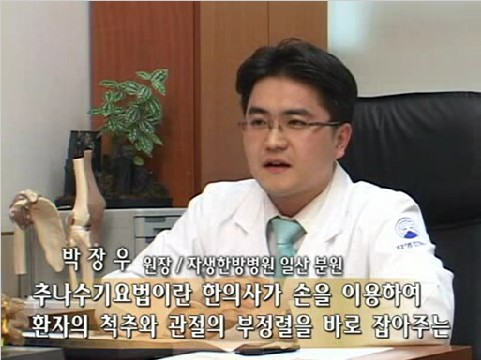
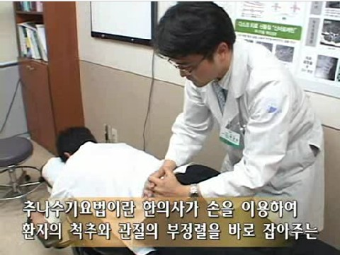
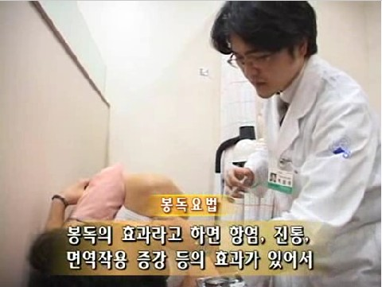
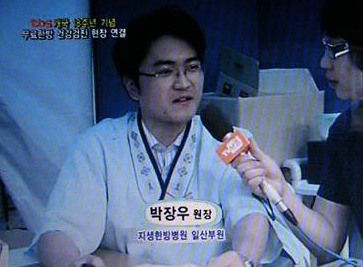
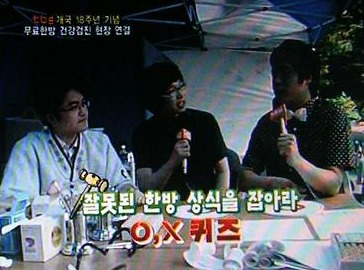
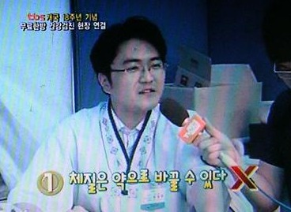
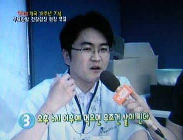
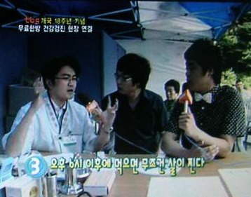
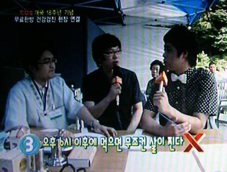
07. 자주 묻는 질문
궁금한 점이 더 있으시면 편하게 전화 주세요.
네, 예약 없이 언제든 방문하셔서 진료받으실 수 있습니다.
네, 전국의 모든 한의원에서 교통사고 후유증을 치료합니다. 하지만 교통사고 후유증을 전문적으로 보는 한방과는 한방재활의학과입니다. 정관고려한의원은 한방재활의학과 전문의로서 교통사고 후유증을 좀 더 세심하게 진료합니다.
초등학생들도 잘 맞고 갈 정도로 아프지 않게 침을 놓습니다. 침에 대한 공포감이 있는 분들은 미리 말씀하시면 더 신경 써서 아프지 않게 자침합니다. 반대로 강한 자극을 원하는 분들도 미리 말씀 주시면 자극량을 알맞게 조절합니다.
네, 이를 '습식부항'이라고 합니다. 한의사 선생님에 따라 선호하는 분도 있고 그렇지 않은 분도 계신데, 정관고려한의원은 습식부항을 많이 활용하는 편입니다.
네, 물론입니다. 자동차보험으로 치료받으시는 분들은 본인 부담이 없어 부담 없이 추나치료를 시행합니다. 의료보험으로 치료받으시는 분들은 비용이 발생할 수 있으므로, 본인이 원하시고 원장님이 꼭 필요하다고 판단하는 경우에 시행합니다.
네, 약침은 어혈약침과 재생약침(PDRN약침) 두 가지가 있습니다. 봉침은 알러지 부작용이 없게 나온 봉침을 활용하고 있습니다.
침이 워낙 가늘어서 바로 하셔도 괜찮습니다. 다만 습식부항(사혈하는 부항)을 한 경우에는 3~4시간 뒤에 하시는 것이 좋습니다.
08. 진료시간
예약 없이 진료시간 안에 편하게 오시면 됩니다.
09. 오시는 길
한의원 건물에 지하주차장이 있습니다. 자리가 없을 때는 정관성당 맞은편 블록 끝 무료 주차장을 이용해 주세요.
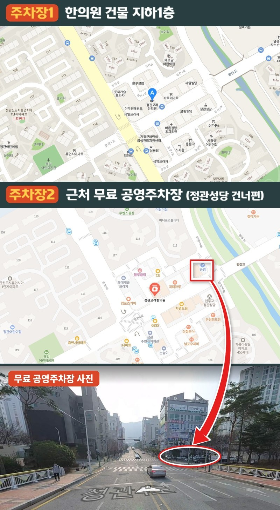
부산시 기장군 정관읍 정관4로 37 2층 정관고려한의원